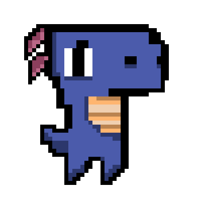

Projeto Bug From Hell 3.0
A PARTIR DE ALGUNS RASCUNHOS, O PROJETO "BUG FROM HELL 3.0" BASICAMENTE PARA DIVERTIR O USUÁRIO (JOGADOR), O JOGO SE RESUME EM UM DINOSSAURO QUE VIVIA A VIDA SUPER BEM E POR UM BUG EM SEU JOGO ELE ACABOU CAINDO EM UM CASTELO MEDONHO E ALI PROCURANDO UMA FORMA DE SAIR DAQUELE AMEDRONTADOR LUGAR. E QUANDO PENSA QUE REALMENTE ESCAPOU, ACABA SURGINDO EM UM LUGAR DIFERENTE, COM NOVOS DESAFIOS.
QUESITO: Descrição
ENGINE: Construct 3
PLATAFORMA: PC
MECÂNICA: Ação, Luta, Plataforma, Top-Down
DISPOSITIVOS DE ENTRADA: Teclado

Personagem
Este personagem vive a vida tranquilamente
correndo e pulando cactos, com a intenção
de conseguir a maior pontuação, até ocorrer
um imprevisto.
-TRILHA SONORA-
dnb-guitar-loop.wav
-ELEMENTOS ESPECIAIS-
É um ataque especial, onde só poderá ser usado
após o jogador conquistar o primeiro "Diamante Especial"
que será explicado no decorrer do jogo, mas,
basicamente dá um poder temporário ao usuário
como: super força, aumento de tamanho, mudança
de aparêcia (tendo uma aparência mais amedrontadora),
dará um rugido onde espantará todos a sua volta
fazendo com que corram o mais rápido possível do
jogador.
-REGRAS DO JOGO-
1. O jogador não deverá ficar parado pois sua
hábilidade só irá evoluir conforme andar.
2. Após perder suas três(3) vidas ganhas, o
jogador Dino morrerá e será reiniciado a fase.
3. O jogador deve seguir o tutorial inicial do
jogo, onde ensina como destruir ou evitar cada
inimigo.
4. O jogador deve seguir o tutorial inicial
para saber como evitar obstáculos que estarão
pelo caminho.
Personagem
Este personagem vive a vida tranquilamente
correndo e pulando cactos, com a intenção
de conseguir a maior pontuação, até ocorrer
um imprevisto.
-TRILHA SONORA-
dnb-guitar-loop.wav
-ELEMENTOS ESPECIAIS-
É um ataque especial, onde só poderá ser usado
após o jogador conquistar o primeiro "Diamante Especial"
que será explicado no decorrer do jogo, mas,
basicamente dá um poder temporário ao usuário
como: super força, aumento de tamanho, mudança
de aparêcia (tendo uma aparência mais amedrontadora),
dará um rugido onde espantará todos a sua volta
fazendo com que corram o mais rápido possível do
jogador.
-REGRAS DO JOGO-
1. O jogador não deverá ficar parado pois sua
hábilidade só irá evoluir conforme andar.
2. Após perder suas três(3) vidas ganhas, o
jogador Dino morrerá e será reiniciado a fase.
3. O jogador deve seguir o tutorial inicial do
jogo, onde ensina como destruir ou evitar cada
inimigo.
4. O jogador deve seguir o tutorial inicial
para saber como evitar obstáculos que estarão
pelo caminho.